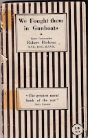
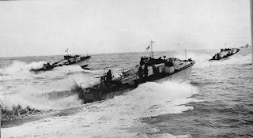
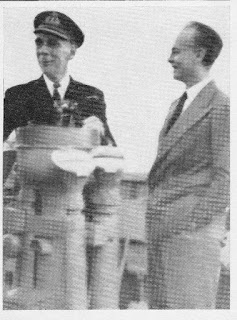
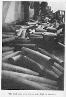
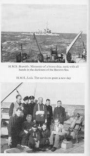
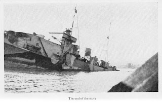

{kind=link}

Watching the Channel 4 journalists every night, telling us about the wonderfulness of the NHS and woefulness of the government, prompts thought about earlier reporting in a time of crisis. I'm currently researching WW2 naval history and have felt surprised by the number of books (and films) describing active service which were published when that service was still active -- and the end of the 'story' not known. The naval officers whose lives I’m writing about were volunteers so it’s probably not surprising that some of them took to their pens to try to make sense of their new existence – despite censorship and the Navy’s initial attempt to ban the keeping of diaries. These volunteers were not going to be dependent on the goodwill of the Lords of the Admiralty in their future careers so could afford some mild assertions of independence.
It wasn't long before the Navy decided to make the best of this. Publication could be facilitated -- if the
content was acceptable. Nicholas Monsarrat’s HM Corvette was published in 1942 and was followed by three more short books describing his life in the navy. Robert
Hichens We Fought Them in Gunboats was
published in January 1944 (incomplete as the author
had been killed the previous April) and JPW Mallalieu was given time away from
his normal duties to complete Very
Ordinary Seaman later that year. Perhaps because the Admiralty, too, was employing a
significant number of civilians in uniform, the preferred (though far from invariable)
approach was to manage rather than suppress information. Professional war correspondents were also given a
generous level of access – a little like allowing TV cameras into Covid wards?
Those war correspondents ran significant risks. When a ship
goes down at sea, a passenger may be offered the first space in the life raft
but, beyond that, death does not discriminate. Human bodies can be lacerated,
drowned or burned whether they are taking the King's shilling or Lord Beaverbrook's. There were a few tin
hats available for those on deck during a naval battle but no flak jackets or other protective equipment. If landing on a hostile shore, it was probably safer to be wearing a uniform than civilian clothes
as the Geneva Convention offered better protection than a press pass in case of capture.
 |
| MGBs (Official Admiralty photo 1943) |
{kind=link}
Operation Chariot – the St Nazaire Raid 28th
March 1942 – was the first major joint undertaking between the navy and the commandos.
They planned to run a redundant destroyer into the heavily defended Loire, ram it into the gates of the Normandie dock and
then explode it. The purpose was to render the dock unusable by the feared
German battleship Tirpitz while inflicting as much additional damage as possible -- particularly to the U-boat facilities. The
approach was to be made at night across the estuary shallows. The designated blockship (HMS Campbeltown) had been stripped of all her fittings to make her float as lightly as possible. All the accompanying vessels, carrying guns and commandos, were small boats from the coastal forces. They were a motor gunboat (MGB), a motor torpedo boat (MTB) and 16
motor launches – all fast and light but petrol-powered and with wooden hulls. Everyone must have known that casualties
would be high.
Official journalists Gordon Holman and Edward Gilling from the Exchange Telegraph news agency were part of the team. The Commandos and the boat crews had made their Wills and written their last letters, as was customary before going into action. I wonder whether the journalists would have done so?
Official journalists Gordon Holman and Edward Gilling from the Exchange Telegraph news agency were part of the team. The Commandos and the boat crews had made their Wills and written their last letters, as was customary before going into action. I wonder whether the journalists would have done so?
{kind=link}
Only three of the Operation Chariot motor launches made it back to Falmouth on March 29th1942. One had returned earlier with engine trouble, eight had been destroyed in
action and four were so badly damaged that they had to be scuttled on the
voyage home. The MGB and MTB were also lost. Of the 611 men who undertook the raid, 228 returned to
Britain, 169 were killed and 215 became prisoners of war. Both the journalists, luckily for them, survived.
Gordon Holman had already written a book about the newly-formed Commandos: now he was writing about the navy’s Coastal Command (The Little Ships published October 1943). He travelled to Felixstowe to meet the Lieutenant Commander Robert Hichens RNVR and look around flotillas stationed there.
Gordon Holman had already written a book about the newly-formed Commandos: now he was writing about the navy’s Coastal Command (The Little Ships published October 1943). He travelled to Felixstowe to meet the Lieutenant Commander Robert Hichens RNVR and look around flotillas stationed there.
‘Hich said, “I
suppose you would like to see some of the boats,” adding, “Have you ever been in
any of them?” I said I had and he, as a matter of polite conversation asked,
“Who did you go with?”
“Dunstan
Curtis,” I said.
It was an
answer that had a remarkable effect on the Lieut.-Commander. For the first time he
looked very keenly at me and said, “When did you go with Dunstan Curtis?”
“When we went
to St Nazaire,” I told him.
Hich looked at
me silently for a moment – almost as if he did not believe me – then he turned
on his heel and crossing to the half open door said, in a way that embarrassed
me yet made me feel very proud, “Here, you fellows, come and meet a bloody fool
who went to St Nazaire in Dunstan Curtis’s gunboat!”’ (Holman p.66 1943)
Immediately the
war was over the naturalist Peter Scott, who had also served in Coastal Command,
compiled his own history of the service, using testimony from his
peers. Dunstan Curtis described the exit from St Nazaire on his gunboat (MGB 314). They'd been
the last to leave; the vessel a mass of bullet holes, the dead
gunner lying where he’d fallen and everyone on board wounded: ‘Below decks
there was a mass of groaning men. We could show no light down there until the
shell holes had been blocked, otherwise we should have been spotted, so, to
begin with, Holman and the Cox’n did their best, by the light of a dim torch,
to help the wounded.’ (Scott p.58 1945)
There are no
‘groaning men’ in Holman’s book: if they are wounded, they are also stoic, cheerful and gallant An official journalist was expected to produce
positive reporting, not to spread ‘fear and despondency’. The current carefully managed
incursions by film crews into hospitals and care homes are not dissimilar. They are guests of the NHS and behave as such.
I find it odd, sometimes to see how NHS management is so completely absolved from responsibility. As I had understood the Health and Social Care Act 2012, the Secretary of State relinquished his or her 1948 responsibility for citizens’ health at that point, passing it to Public Health England and the NHS Confederation. The Government can be stingy with funds (a crucially important power) but (I thought) that it does not have direct control over the specific ways in which the money is spent.
I find it odd, sometimes to see how NHS management is so completely absolved from responsibility. As I had understood the Health and Social Care Act 2012, the Secretary of State relinquished his or her 1948 responsibility for citizens’ health at that point, passing it to Public Health England and the NHS Confederation. The Government can be stingy with funds (a crucially important power) but (I thought) that it does not have direct control over the specific ways in which the money is spent.
This is not unlike the situation of the Admiralty in 1939.
Although dependent on a financial allocation (the Naval Estimates) the way in
which the money had been spent through the years of appeasement was Their Lordships responsibility, not the minister's -- one big
battleship or fleets of coastal craft? their choice. But if the Admiralty Press office, the
Ministry of Information; had ‘allowed’ an official journalist on board they were, of course, guests. It wouldn't be quite polite to mention such shortcomings.
If you were a serving officer, however, it was fine to have a damn good grumble (as long as you were only temporary). Here's Robert Hichens expressing his shock at pre-war negligence by the professionals. 'The Admiralty could have brought as many E-boats as they wished, and indeed were pressed to do so, just one short year before the outbreak of war. Well, well, talk about visiting the sins of the fathers on the children.' (Hichens p119)
 |
| The Captain of the Pozarica & Godfrey Winn |
{kind=link}
Godfrey Winn
spent almost 3 years as a Fleet Street war correspondent and giving morale-boosting talks for
the Ministry of Information. He grew sick of being a spectator, ushered onto
ships or aircraft and shown only what his hosts wanted him to see. He could also no
longer bear the silent suffering of the families who were being bereaved. ‘The
bright brittle platitudes no longer make any sense to me and I can’t go on
writing them, because I have lost faith in the efficacy or importance of the
written word.’ (Winn p43 1947) He handed in his notice to the Sunday Express in July 1942 and signed on as an ordinary seaman to
train at HMS Ganges.
Before he went
he decided to allow himself a week’s holiday and accepted an invitation to sail
with ‘The Pozy’. This was HMS Pozarica, a former
fruit-boat converted to an anti-aircraft merchant cruiser. She was an odd,
unbeautiful craft but both the captain and crew had been extraordinarily welcoming when he'd visited as a journalist and…he’d fallen in love with her.
What was meant to be a brief break between one way of life and the next, turned into a three month gap, during which Winn found himself covering one of the biggest disasters of the war – the Arctic convoy PQ17. Of course he had began to keep a diary as soon as he began his 'holiday' on The Pozy. He had no idea, then, what lay ahead but he was a writer and was enjoying the mental freedom of writing for himself once again: ‘without the blue pencil slashings that had crippled one powers of description and negatived one’s enthusiasm for so long.’ Winn was a novelist, now that he was not longer a journalist (he thought) he could allow himself to be interested in nuances of character and the interplay of relationships, in detail and foibles.
What was meant to be a brief break between one way of life and the next, turned into a three month gap, during which Winn found himself covering one of the biggest disasters of the war – the Arctic convoy PQ17. Of course he had began to keep a diary as soon as he began his 'holiday' on The Pozy. He had no idea, then, what lay ahead but he was a writer and was enjoying the mental freedom of writing for himself once again: ‘without the blue pencil slashings that had crippled one powers of description and negatived one’s enthusiasm for so long.’ Winn was a novelist, now that he was not longer a journalist (he thought) he could allow himself to be interested in nuances of character and the interplay of relationships, in detail and foibles.
PQ17 was a
convoy intended to deliver essential supplies to Russia, via the Arctic route
from Iceland to Archangel. It was the first joint British / US naval operation
and it went horribly wrong. The Admiralty had operational control and again
fear of the Tirpitz was the dominant
factor. Acting on information that she had left her north Norwegian base near
Trondheim and might be making a break for the Atlantic, all the cruisers,
destroyers and aircraft that had been protecting PQ17 were ordered away
to join the battleships of the home fleet to tackle the monster -- who had
merely poked her nose out to sea, then turned back.
 |
| Shells on the deck of HMS Pozarica (PQ17) |
{kind=link}
The 35 merchant
ships were instructed to scatter and proceed independently. Some small residual
support could be provided by ships such as the Pozarica for those few vessels who chose not to remain together
but most dispersed as instructed, either carrying on for Archangel or seeking
refuge in various inhospitable anchorages such as Novaya Zemla. 24 of them were
destroyed by U-boats and the bombers.
Godfrey Winn (who was seriously overdue for his enrolment at HMS Ganges and who had an injured hand), spent several weeks in Russia before he was
despatched back to England on a US ship with messages from his ship mates to their families and an understanding that he would tell their
story. Arriving home he underwent surgery, delivered the messages and then
agreed to a former editor’s request for an eye-witness account.
 |
| PQ17 Friends, drowned and saved |
{kind=link}
It went to
the Admiralty to be checked,as usual, and Winn was called for an interview with the First Lord, Mr A V
Alexander. ‘I saw at a glance that the
sheets were scored with marks, queries, comments in the margin […] I had never
had any manuscript returned to me in this state before. Nor had I been
informed, baldly and finally, that not one single word of my “story” could come
out.
“Not one single
word…” I repeated stupidly, my voice trailing away. I felt myself rocking
slightly on my feet from weakness and disappointment’ p229
Winn collected himself to argue passionately that the families deserved the truth, the Allies needed to understand the true cost of the northern pipeline, that rumours were rife, that the Americans and the neutrals were contemptuous, that the survivors would soon start trickling home . ‘And you’ll have to come out with something in the end, and because it will be so late and dragged out, no one will believe it.’
Winn collected himself to argue passionately that the families deserved the truth, the Allies needed to understand the true cost of the northern pipeline, that rumours were rife, that the Americans and the neutrals were contemptuous, that the survivors would soon start trickling home . ‘And you’ll have to come out with something in the end, and because it will be so late and dragged out, no one will believe it.’
‘So I was led
away, shaking and throat dry, with the banned, mutilated manuscript in my free
hand, and as I got back clumsily into the taxi and leant my head that seemed
about to burst against the back, I did not pause to think: well one day there
will be no more censorship and writers will be free again: I could not see that
far ahead: instead I was only conscious
of my utter impotence at that moment, though it is true that mingled with the
weight of failure there was a certain counterbalancing feeling of relief too.
At any rate this was the very last time I should ever have to beat my head
against this particular brick wall.’ (Winn 1947 p.231)
Winn joined HMS Ganges, as a ‘Hostilities Only’ Ordinary Seaman and refused any offer to apply for a commission. It was a little like deciding to sign up as a care assistant. He kept in touch with the sailors who had been his friends on HMS Pozarica and with their families. Then, as soon as the war was over and he’d finally obtained his discharge, he wrote his book, PQ17 -- one of the best books to emerge from this time of crisis: a story told by a participant, not a journalist.
 |
| The end of HMS Pozarica January 1943 |
{kind=link}